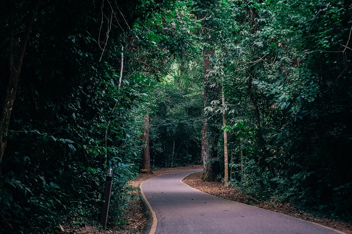
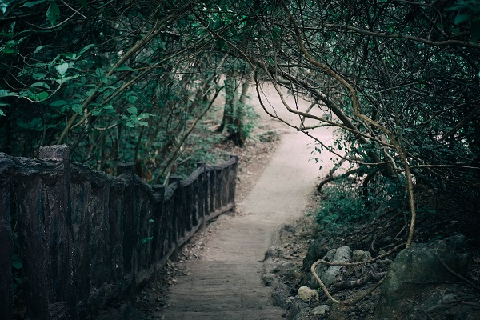
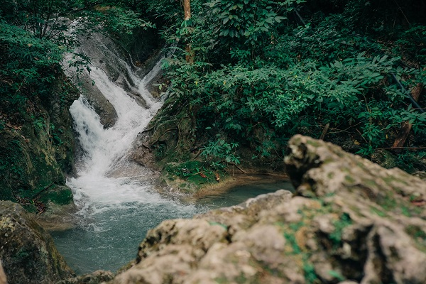
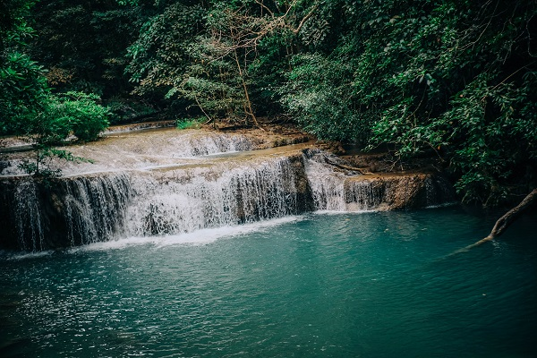

|  | 🍃🏞ระหว่างทาง🏞🍃 ช่วงแรก : ทำไมทางมันเดินสบายกว่าที่คิดไว้เยอะ เป็นปูนตามทางไปเรื่อยๆ แต่พอเดินไปสักพัก เทางก็เปลี่ยนเป็นแค่หินกับต้นไม้ แถมยังชันอี๊ก🌳 (ปวดเข่า555) แต่ก็ยังรู้สึกว่ายังไม่ค่อยพี๊คไม่เหนื่อยเท่าไหร่ |
| แล้วยิ่งเดินขึ้นไปเรื่อยๆทางยิ่งยากขึ้น ซึ่งไม่คิดว่าทางจะยากขนาดนี้😅 ที่พีคคือต้องจับเถาวัลย์เพื่อปีนหินสูงๆ ข้ามทางน้ำไปอีกทีซึ่งถ้าตกลงไปน่าจะเจ็บหนักพอสมควร 😂 |
 |
|  | พอข้ามไปแล้วสรุปยังต้องเดินขึ้นไปอีก แล้วระหว่างทางก็มีน้ำจากน้ำตก ก็เดินลุยน้ำลุยหิน (เท้าก็เปียกน่ะสิ💦) กะว่าจะถ่ายตอนเดินแต่ไม่ไหวจริงๆ กลัวตก555 |
| มาถึงแล้ว ชั้นที่ 7 เป็นชั้นที่สูงที่สุด และทางเดินยากที่สุด น้ำตกสวยมากจริงๆ น้ำใสมากๆ อยากให้ทุกคนที่เข้ามาอ่าน blog นี้ตามไปเที่ยวและได้เห็นกับตาตัวเอง |  |